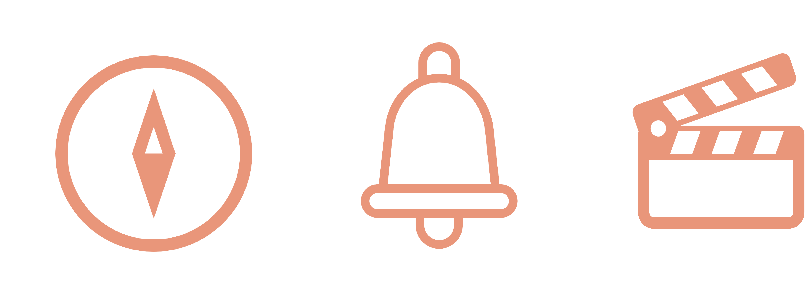

Within the last few years, the trend of autonomy has taken over the digital space and cemented itself as the leading area of innovation. It is common to see autonomy utilised in situations where cars or drones are the main feature, but what about thinking outside the box and using autonomy to help every day individuals navigate tricky situations? My team and I looked at how we could improve the overall experience of international airports. After conducting variously large amounts of research and ideating copious designs using the key design thinking methods, Friendbot was created.
What is Friendbot?
Friendbot is an autonomous robot that has been designed with the number one focus of providing a positive experience to passengers whilst they are at the airport. Friendbot greets passengers as they enter the airport and if the user wants the robots assistance, Friendbot will guide them to all the main procedures such as check in, security and boarding gate. Once the passenger has arrived at their gate, Friendbot gives them the additional option to order food, or browse through the duty free shops as well as watch movies or play games. Friendbot also provides important notifications and regular updates to passangers regarding their travel and flight arrangements.
How was Friendbot Created?
After conducting initial research such as visiting The Sydney International Airport, interviews, online ethnographies and generative focus group sessions we came up with three main user needs:
Iteration and Ideation
Once our user needs were established, we went to work on our iteration and ideation process. We came up with a number of different solutions, which we paper prototyped all of them.
Initially we created three concepts that highlighted our user needs in different aspects of the airport journey. After consulting with an experienced UI designer, we further developed two of these concepts into paper prototypes and conducted user testing on both. After that initial round of user testing we decided that our final concept would be Friendbot. We then further ideated the Friendbot concept with several more rounds of user testing. As a team we decided to focus heavily on the ideation in these early stages as it would be beneficial in our later designs. We conducted several rounds of user testing before we designed our wireframes, and because we took every design suggestion on board from our users, not much needed to change between our wireframes and our mockups.


Testing our Interactive Portotype
After we designed our interactive prototype we gave it to users that meet our target audience to see if there were any adjustments that needed to be made. From their mainly positive feedback we finalised our design by changing a few elements. Here are some of the users we tested with:

Important Design Decisions
Reflection
Throughout the developmental process of Friendbot, I feel I have grown immensely as a designer and researcher. The most important lesson I have learnt is that there are such a wide variety of users in any given situation and to be a great designer, you have to consider them all. Whilst it is easy to only consider the majority of users, it is not accessible or inclusive design. This was particularly important for Friendbot given its diverse users. Another important skill that I have learnt whilst creating Friendbot is the importance of having a solid team to work with. I was very lucky with the team I had, we played to each others strengths well but we were also very good at taking each others ideas and not just shutting them down. This is the reason why the majority of our process was seamless, we did have our problems to overcome but by having each other we were able to solve them quickly and effectively.
After taking a step back and looking at our final product, it is safe to say that the late nights were worth it. It was a very intense 13 weeks but I am immensely proud of myself and my team for creating a product that is not only unique, but extremely useful to our target users. I am glad we looked outside the typical autonomous car or drone and came up with a truly creative solution to a somewhat boring problem. If it wasn’t for the skills learnt and developed in all the subjects leading up to and including Interaction Design Studio, we would have not been able to create Friendbot.